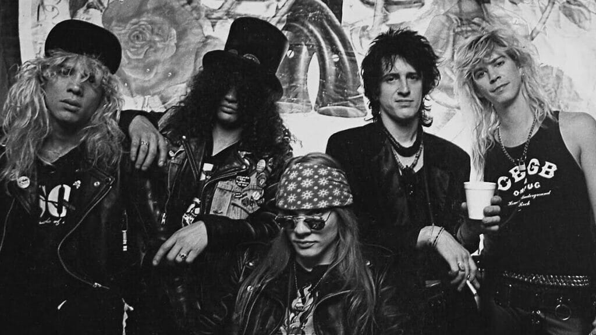

O começo
O rock and roll se populariza com guitarras elétricas, batidas fortes e artistas pioneiros.
MUNDO DO ROCK
Uma história de atitude, liberdade e muita música.

O rock and roll ganhou força nos Estados Unidos durante a década de 1950. Artistas misturaram blues, rhythm and blues e country, criando um som dançante, intenso e diferente de tudo que existia até então.
Nos anos 1960, bandas britânicas levaram o gênero a novos públicos. Nas décadas seguintes, o rock se multiplicou em estilos como hard rock, punk, heavy metal e grunge.
O rock and roll se populariza com guitarras elétricas, batidas fortes e artistas pioneiros.
Bandas do Reino Unido conquistam o mundo e ampliam as possibilidades do gênero.
Hard rock, punk e heavy metal ganham força e criam cenas próprias.
O grunge e o rock alternativo chegam ao grande público. O gênero continua se reinventando.